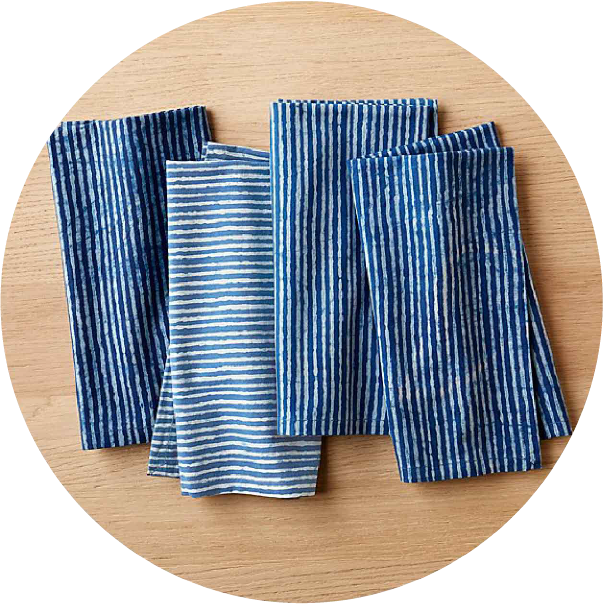
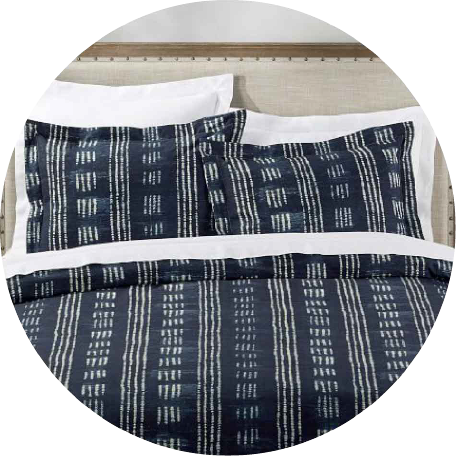
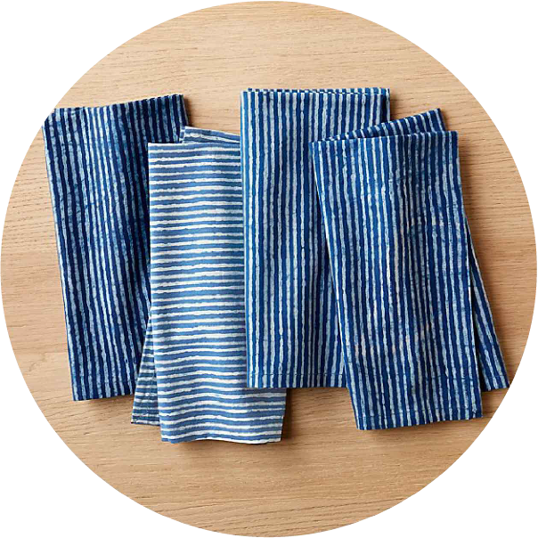
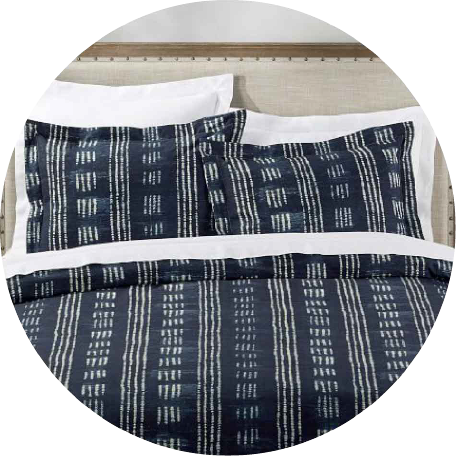
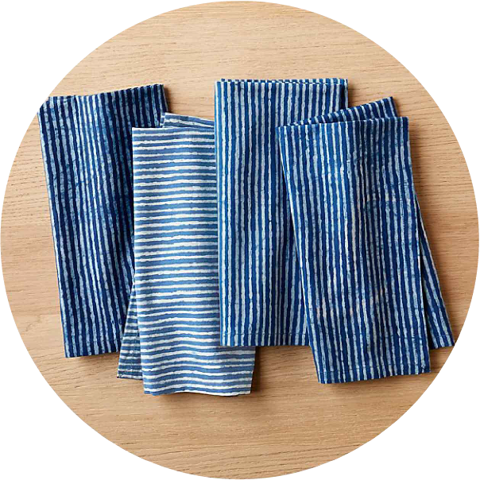
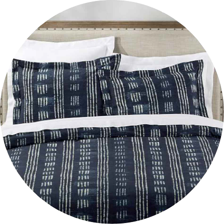
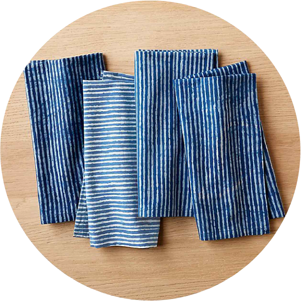
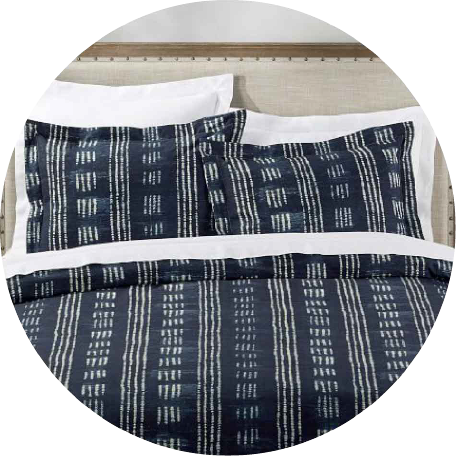
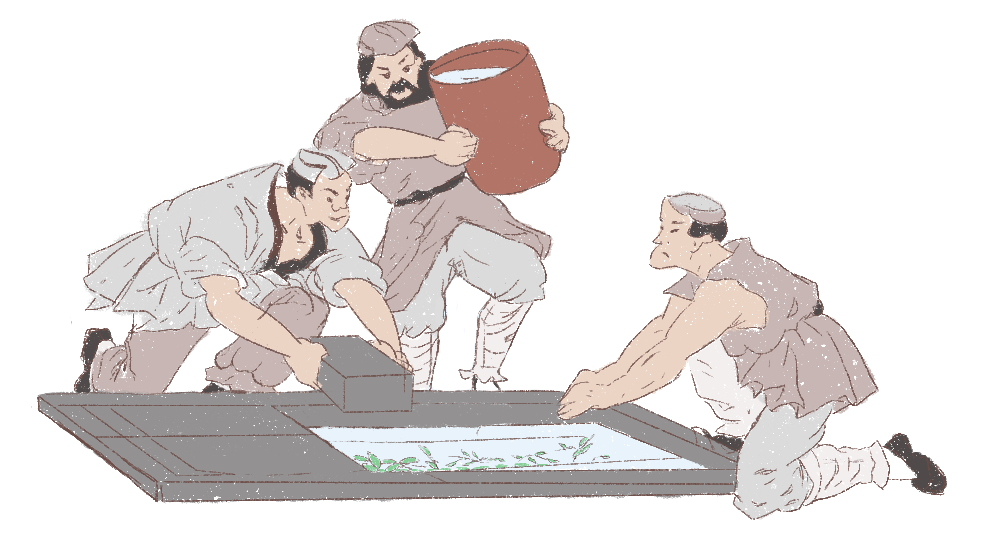
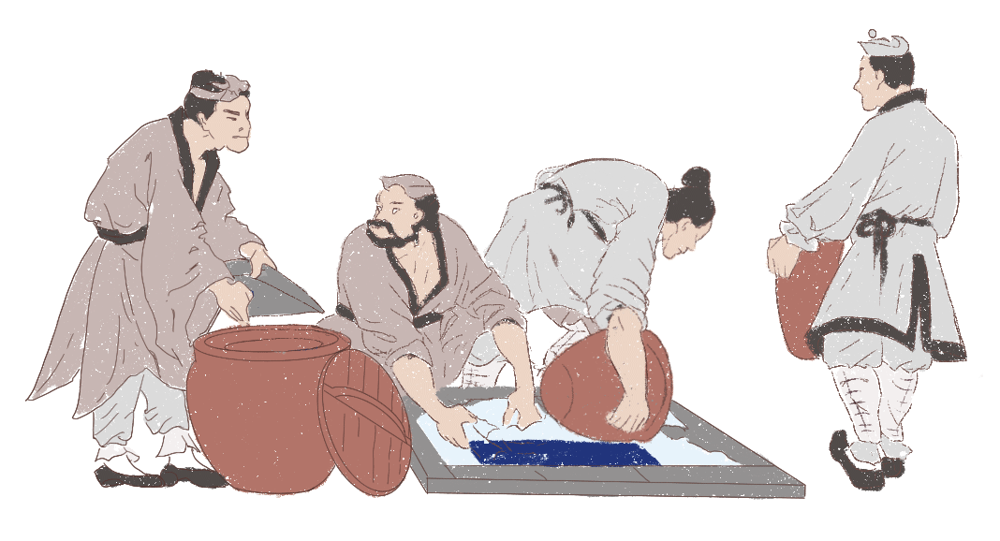

There is something in common in these icons, can you find it?
 






Indigo is among the oldest dyes to be used for textile dyeing. Many Asian countries, such as India, China, Japan, and Southeast Asian nations have used indigo as a dye (particularly silk dye) for centuries.
Especially in China, Indigo dye mirrored Chinese history to some extent. At the end of the 13 century, cotton gradually replaced the role of linen as the main character of the Chinese textile industry after people imported cotton from India. But raw cotton is white, easy to become dirty. People tried to find a stable top-grade dye for cotton dying. Indigo is one perfect choice. In this case, the indigo dyeing industry became increasingly important in the 17 century, the beginning of the Qing Dynasty. In a long time, southern villages’ farmers and workers lived in the indigo fabric industry.
A craft man, who wears indigo cloth, is coloring the chinaware.
Indigo fabric exports from ancient China to other places with tea, silk, chinaware. Traditional indigo dyeing mirrored the flourishing and invigorating of the early Qing Dynasty, the population of people increased 13-14%. Even today, some areas remain the traditional ways of making indigo fabrics.

Making indigo dyeing
In the beginning, workers pour the bluegrass like Isatis root, into the bar, with big stones or woods on them.
After several days, they filter the liquid and add the lime with a proportion of 1.5%. then they use the stick to stir the liquid.

After the lees of indigo dyeing gradually subside, people discharge the water. In the end, the indigo dyeing will be like a thick porridge. Indigo dyeing is successfully made.
Back to the late Qing dynasty, the 18th century, more and more native fabric makers lost their jobs, because western fabrics that the Spinning jenny was invested to produce in the First Industrial Revolution, were much cheaper compared to native fabrics. The machine replaced the role of normal workers.
And with the development of indigo synthesis, Johannes Pfleger and Karl Heumann eventually came up with industrial-scale synthesis in the late 19th century. In this way, the indigo making process is not economical anymore. In 1897, 19,000 tons of indigo were being produced from plant sources. The number is decreased to 1,000 tons in 1914 as indigo synthesis became popular. Technology forever changed the rule of making indigo.
Since native farmers and workers lost their jobs, then became protests, they came together, gradually behave more violently. Qing governments had to quell the insurgency, but increasingly struggled to deal with them. Resulting from a series of violent protests, the government had to brought guns from other developed countries. But other countries are not great friends for them. Oppositely, they’ve coveted the Chinese land for a long time. Because China was weaker and weaker, some of them wanted to take advantage of it.
In 1894, Chinese exports suffered huge damage because of the stimulation of the Sino-Japanese War. With the end of the failure of Qing’s army, more unequal treaties were made under duress. The exports of Chinese indigo fabric decreased a lot.
The second big drop happened in 1904, the Russo-Japanese War broke out in the Liaodong Peninsula, which is in northeast China. This war is like the rehearse of the First World War with big armies, enough supplies, high-developed equipment like rapid-firing guns. In this case, the Qing dynasty was more bulled by greater powers. China became more turbulent.
Soon, the 1911 Revolution happened. Intellectuals, farmers, vagrants, secret public organizations were able to group together and successfully overthrew China's last imperial dynasty, the Qing dynasty, because it's too weakn to modernize China and confront foreign aggression.
And the May 4th Movement, which happened in 1919, has many similarities with the 1911 Revolution. People were unsatisfied with the government’s attitude towards invaders. Many people from different background supported and participated. And those people were out on strike, marched against the government, even violent confrontation. Because of the prevailing insecurity, the exports of Chinese products drastically reduced. Civilians became destitute and homeless, many children starved.
A Homeless Mother with her Children
Luckily, some wealthy Chinese people learned to develop technology from western countries and build new factories in China. They took advantage of the period of the First World War, when western countries defended their own countries and had no time to go forward, to develop Chinese light industry. The wealthy Chinese people are also the main powers to support students in the May 4th Movement. So, there is a significant increase in the exports after 1920.
A Textile Factory in Shanghai
Some people still insist on traditional ways to produce indigo fabric in southeast China nowadays. In my hometown Guizhou, Miao people are famous for this traditional craft. If you go to local landscapes, there will be some indigo fabric handicrafts sold. Many of them express good wishes.
For example, a big splash, the carp has leaped through the dragon's gate, means success, especially for students who have passed their exams.

A Big Splash

Happiness, Longevity with Lots of Children

Phoenix Play with Peony Flower
In spite of traditional design, some artists also tried many ways to innovate indigo fabric to promote traditional things that got more use in modern society.
Maybe some people think the indigo fabric would quickly revive with the establishment after the war of the People's Republic of China in 1949 period. But it’s not true. China took a roundabout course in economic development in the Great Leap Forward, which moved too quickly and created economic problems. A significant result of the Great Leap Forward was a drastic decline in food output, which caused tens of millions of deaths in the Great Chinese Famine. Approximately 30 million people died in only five years. After that, the Cultural Revolution, which established to recorrect the problems of the Great Leap Forward, but damaged China's economy further. We can almost say, China had enough calamitous trouble in their modern history.
But their fortunes began to change with the coming of the 1980s. The Chinese Economic Reform changed the case that the Chinese market was closed for nearly 30 years, most Chinese lived on less than $2 per day. The Reform pushes the high-speed development of the Chinese economy. From 1978 until 2013, rapid growth occurred, with the economy increasing by average 9.5% a year. How did they do that?
First of all, the government gave up some control of social resources, ignited entrepreneurship, gave private firms considerable freedom.
Secondly, the government opened its market at some Special Economic Zone in Guangdong and Xiamen, to attract overseas investment. These areas have more flexible policies, tariff reduction and exemption, and ideal investment environment.
Thirdly, China actively became a member of the World Bank, the International Monetary Fund and the World Trade Organization. Mayor Zhu Rongji used to say:” We have been talked, on and off, for 15 years (join to WTO), even hair from black to white”. Why China spared no effort to officially join WTO? Being a member, China can collaborate with other member countries without any extra tariffs or other barriers. If any trade friction happens, WTO will help to solve it.
With their help and diligent Chinese who were pressed for so long time, China is world-shaking changed.
We can compare the top 5 categories of exports from China and America to the world in 1960 and 2018. In 1960, the top one exports community is vegetable products. Product rank from 1 to 3 is rice, which is No.1 item, worth 33057089 in the list, then soybeans, tea.
But in 2018, the top one community is the machine. Product rank from 1 to 3 are telephones, computers, integrated circuits. It is no surprise that China is the so-called “the factory of the world” with rapid industrialization.
Even if the second community in 1962 and 2018 both are textiles, the detailed product names are different. In 1962, the exports of Chinese textile is mainly composed of woven cotton, house linens, raw silk and so on. In 2018, the exports of Chinese textile consists of knit sweaters, non-knit men and women’s suits, non-knit men and women’s coats. You can see, Chinese factories mainly produce finished products now, away from cheap mass production.
With the fast reviving manufacturing industry of China in the 1990s, factories began to produce the indigo synthesis, denim fabric, silk in China, especially in Guangdong, a Special Economic Zone.
Nowadays, 70% indigo synthesis and denim fabric in the world come from China. Take the city Xintang for an example. It is known as "hometown of Chinese Jeans", which has over 2600 jeans-making and relative enterprises, producing 2.5 million denim. It occupies 30% of the exports of Chinese denim, sold abroad like Russia, America, Europe and so forth.
As for the imports of jeans from China to America, you will find California imports most. Through research, I found that Levi's owns more than 100 factories in China. Their products will be shipped to San Francisco. Some will be sold to the native. As you know, the population of California is huge. The number of jeans consumers is also huge. Besides, California is also the economic center. Denim fabric will be processed, then to the global market.
Some Chinese factories are in the transition from low-cost manufacturing to knowledge-based industries. Their products are good. But nobody knows that. They have to rely on international big enterprises to survive. How to create their own brand is the biggest challenge for them. Another challenge is water pollution. chemical reagent hurts workers’ health. The government stopped 76 firms’ production last year. One reason is to improve the polluted environment. Another reason is to facilitate new product projects, like the “Foxconn” core supporting business.
All in all, indigo mirrored the decline and revival of China. The dye, which is used for your jeans, is also used for ancient Chinese cloth. And if you check your jeans, it might tell you:” I’m made in China:)”
Thank for professor Alberto Cairo and Lenny Martinez's help. Without their help, I cannot make it. If you want to know more behind this article, welcome to my blog and my portfolio website.